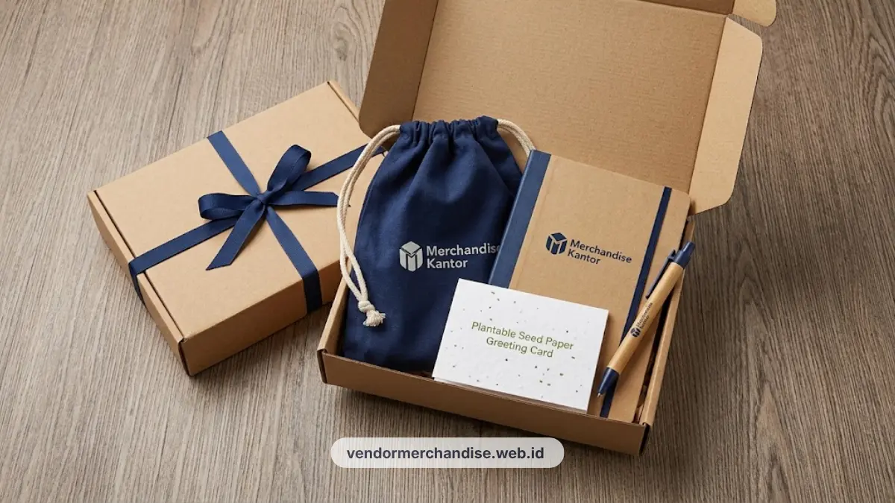

Paket seminar kit ramah lingkungan tersedia dengan material minim plastik, custom logo perusahaan, dan siap kirim untuk kebutuhan acara di Yogyakarta.
Kenapa Seminar Kit Ramah Lingkungan Jadi Standar Baru untuk Acara Kantor
Seminar kit ramah lingkungan menjadi pilihan karena mendukung citra acara yang lebih bertanggung jawab terhadap lingkungan tanpa mengurangi fungsi kit itu sendiri.
Banyak instansi pemerintah, kampus, dan perusahaan di Yogyakarta mulai mempertimbangkan aspek keberlanjutan saat memilih merchandise untuk acara seminar, workshop, atau pelatihan. Tren penyiapan souvenir berwawasan lingkungan ini sejalan dengan panduan 7 merchandise kantor ramah lingkungan yang kini populer di berbagai kota besar.
Penggunaan material yang lebih ramah lingkungan dipandang sejalan dengan kebijakan pengurangan sampah plastik yang semakin banyak diterapkan pada acara-acara resmi. Penyelenggara acara juga sering mengombinasikan paket seminar kit ini dengan welcome box karyawan baru eksklusif untuk kebutuhan onboarding peserta pelatihan internal.
Selain aspek lingkungan, seminar kit jenis ini juga memberi kesan bahwa penyelenggara acara memiliki perhatian terhadap isu keberlanjutan, yang dapat meningkatkan citra positif di mata peserta maupun mitra acara.
Faktor lain yang mendorong tren ini adalah preferensi peserta acara yang semakin sadar terhadap penggunaan barang sekali pakai. Seminar kit dengan material yang dapat digunakan kembali cenderung lebih dihargai dibandingkan kit dengan plastik sekali pakai yang langsung dibuang setelah acara selesai.
Material Alternatif Plastik untuk Seminar Kit Ramah Lingkungan
Material alternatif plastik yang umum digunakan meliputi kertas daur ulang, kanvas, bambu, dan kain non woven yang dapat digunakan berulang kali.
Tas seminar kit misalnya dapat dibuat dari kanvas katun atau kain blacu alami seperti pada koleksi tote bag kanvas custom logo sebagai pengganti tas plastik sekali pakai.
Alat tulis dapat menggunakan bahan bambu atau kertas daur ulang untuk badan pulpen dan notebook, sesuai standar kualitas notes dan pulpen custom logo.
Untuk kemasan pembungkus, kertas kraft polos maupun kertas daur ulang menjadi pilihan yang lebih ramah lingkungan dibandingkan plastik pembungkus konvensional. Pemilihan material ini juga dapat disesuaikan dengan tema acara agar tampilan kit tetap terlihat menarik dan profesional.

Contoh Isi Paket Seminar Kit Ramah Lingkungan
Contoh isi paket seminar kit ramah lingkungan umumnya terdiri dari kombinasi tas kanvas, alat tulis berbahan alami, dan notebook dari kertas daur ulang.
Beberapa kombinasi isi paket yang sering dipesan antara lain:
- Tas kanvas custom logo perusahaan/instansi.
- Notebook dari kertas daur ulang bersertifikasi eco-friendly.
- Pulpen bambu atau kayu dengan grafir laser logo.
- Tumbler stainless custom logo sebagai pengganti botol air kemasan sekali pakai.
- Name tag atau ID Card Holder dari bahan kertas kraft daur ulang atau kayu tipis.
Kombinasi ini dapat disesuaikan lagi berdasarkan durasi acara, misalnya menambahkan payung lipat custom branding atau map dokumen untuk acara yang berlangsung lebih dari satu hari.
Tips Kemasan Minim Sampah untuk Acara Kantor
Kemasan minim sampah dapat diwujudkan dengan mengurangi lapisan pembungkus, menggunakan label kertas, dan memilih kemasan yang dapat dipakai ulang setelah acara.
Salah satu cara sederhana adalah mengganti pembungkus plastik individual dengan satu kemasan utama yang berisi seluruh item seminar kit. Label produk juga dapat dicetak langsung pada kemasan kertas tanpa tambahan plastik laminasi. Anda dapat melihat inspirasi pengemasan di katalog layanan custom logo Merchandise Kantor.
Selain itu, memilih tas kanvas sebagai wadah utama membuat kemasan tersebut dapat difungsikan kembali oleh peserta setelah acara selesai, sehingga mengurangi potensi sampah yang dihasilkan dari satu kali penggunaan.

Pesan Paket Seminar Kit Ramah Lingkungan di Vendor Merchandise Kantor
Vendor Merchandise Kantor menyediakan paket seminar kit ramah lingkungan dengan pilihan material dan isi paket yang dapat disesuaikan untuk acara perusahaan, instansi, maupun kampus di Yogyakarta.
Hubungi tim kami sekarang melalui WhatsApp resmi kami atau kunjungi halaman kontak kami untuk konsultasi paket seminar kit sesuai kebutuhan acara Anda.